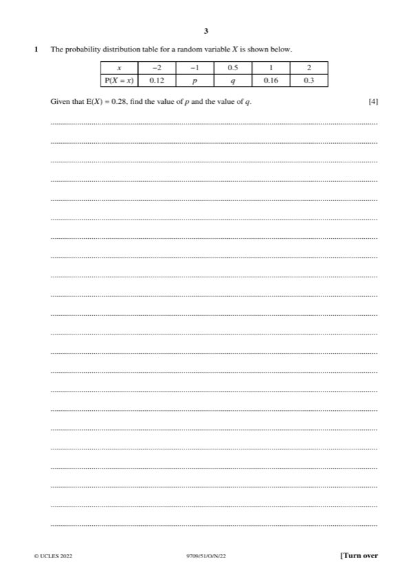

Question 1

Original paper page 3
Part 1 — solution
- [B1] Sum of probabilities = 1
- [B1] Form equation using E(X) = 0.28
- [M1] Either Substitution method to form a single equation in either p or
- [A1] CAO, both WWW
- [M0] awarded SC B1 for both correct WWW
Mark points
- [B1] Sum of probabilities = 1
- [B1] Form equation using E(X) = 0.28
- [M1] Either Substitution method to form a single equation in either p or
- [A1] CAO, both WWW
- [M0] awarded SC B1 for both correct WWW
Part 1 — solution
- [A1] P(A) × P(B) seen and evaluated, all notation present and correct
Mark points
- [A1] P(A) × P(B) seen and evaluated, all notation present and correct